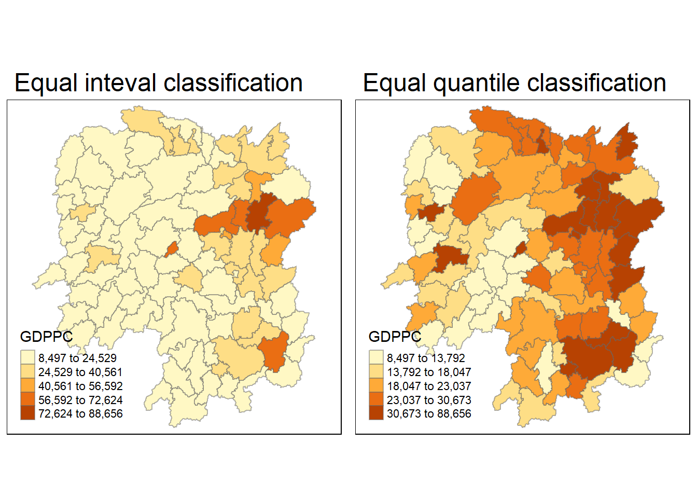
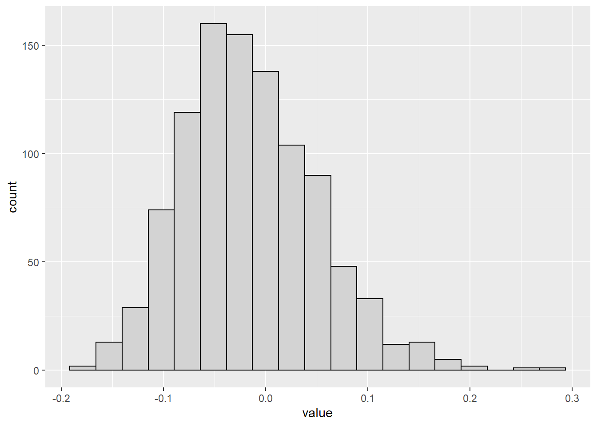
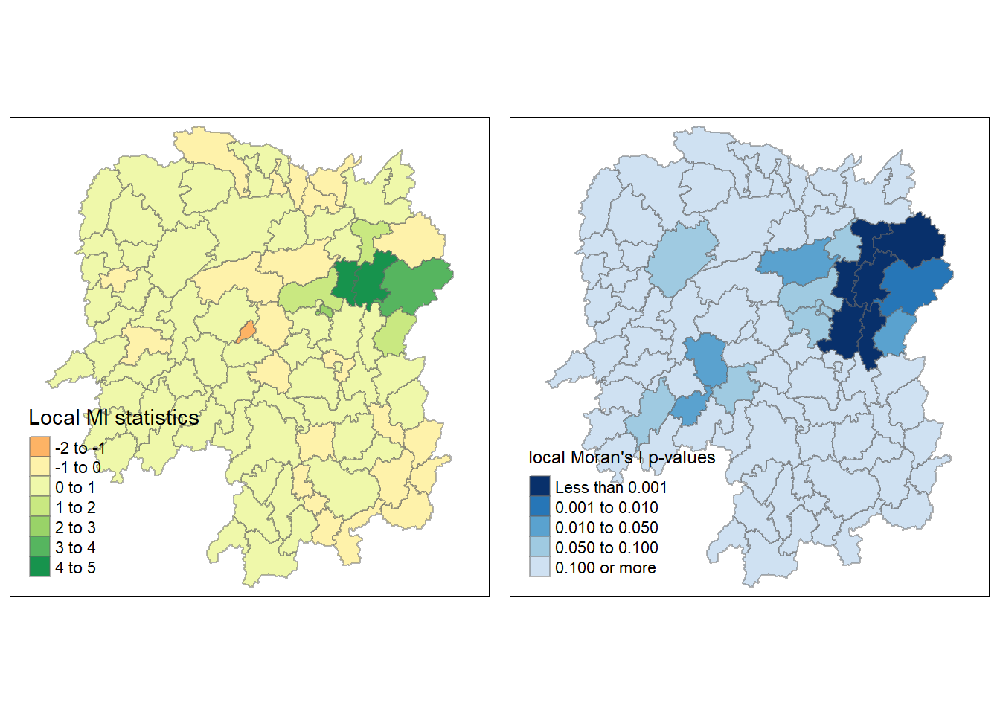
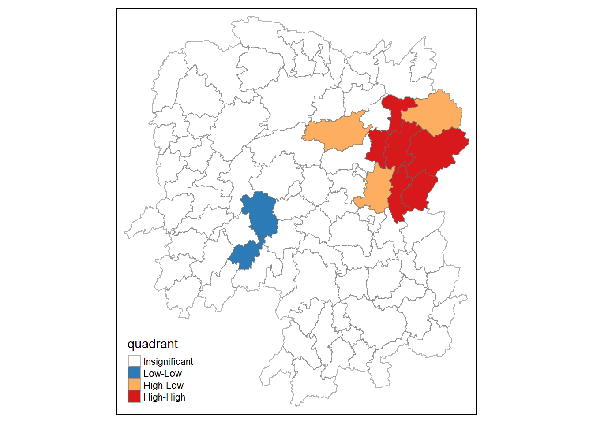
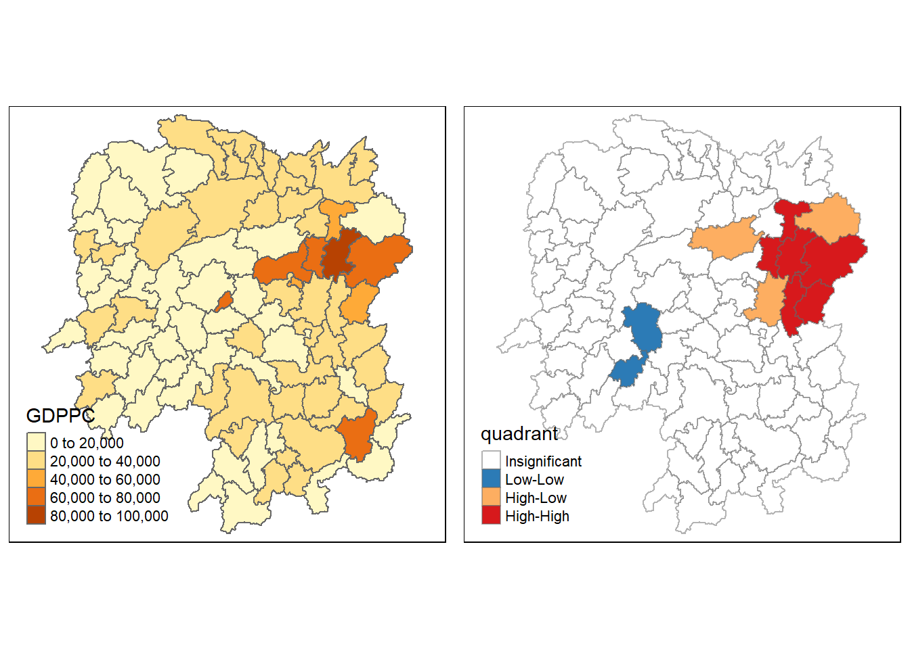

pacman::p_load(tidyverse,spdep,sf,tmap,ggplot2)Hands-on Exercise 2: Global and Local Measures of Spatial Autocorrelation
Overview
In this Hands-on Exercise, I learn how to compute Global and Local Measure of Spatial Autocorrelation (GLSA) using spdep package.
Getting Started
Case Study Question
Examine the spatial pattern of a selected development indicator, in this case, GDP per capita in 2012 of Hunan Province, PRC to see if the development are evenly distributed geographically. If the answer is No, we will then have to conduct further study to find out about the clusters and outliers.
Study Area and Data set
Hunan province administrative boundary layer at county level. This is a geospatial data set in ESRI shapefile format.
Hunan_2012.csv: This csv file contains selected Hunan’s local development indicators in 2012.
Setting the analytical tools
Getting data into R environment
Importing Shapefile into R environment
hunan<-st_read(dsn="data/geospatial",layer="Hunan")Reading layer `Hunan' from data source
`C:\thaorocket\ISS624\Hands-on_Ex2\data\geospatial' using driver `ESRI Shapefile'
Simple feature collection with 88 features and 7 fields
Geometry type: POLYGON
Dimension: XY
Bounding box: xmin: 108.7831 ymin: 24.6342 xmax: 114.2544 ymax: 30.12812
Geodetic CRS: WGS 84Importing CSV file into R environment
hunan2012<-read_csv("data/aspatial/Hunan_2012.csv")Rows: 88 Columns: 29
── Column specification ────────────────────────────────────────────────────────
Delimiter: ","
chr (2): County, City
dbl (27): avg_wage, deposite, FAI, Gov_Rev, Gov_Exp, GDP, GDPPC, GIO, Loan, ...
ℹ Use `spec()` to retrieve the full column specification for this data.
ℹ Specify the column types or set `show_col_types = FALSE` to quiet this message.Performing relational join
hunan<-left_join(hunan,hunan2012)Joining, by = "County"Visualizing Regional Development Indicator
We are now preparing a base map and a choropleth map showing the distribution of GDPPC in 2012 by using qtm() of tmap package.
equal<-tm_shape(hunan)+tm_fill("GDPPC",n=5,style="equal")+tm_borders(alpha=0.5)+tm_layout(main.title="Equal inteval classification")
quantile<-tm_shape(hunan)+tm_fill("GDPPC",n=5,style="quantile")+tm_borders(alpha=0.5)+tm_layout(main.title="Equal quantile classification")
tmap_arrange(equal,quantile,asp=1,ncol=2)
Note: “equal” style divides input values into bins of equal range and is appropriate for variables with uniform distribution. It is not recommended for variables with skewed distribution as the resulting map will end up having little color diversity.
The “quantile” style breaks the input values into bins with an equal number of features (polygons).
Reference: https://geocompr.github.io/post/2019/tmap-color-scales/
Global Spatial Autocorrelation
In this section, I learn how to compute global spatial autocorrelation statistics and perform spatial complete randomness test for global spatial autocorrelation.
Computing Contiguity Spatial Weights using Queen criteria
Before we can compute the spatial autocorrelation statistics, we first compute the contiguity spatial weights of the studied area. The spatial weights are used to define the neighborhood relationship between geographic units (i.e. county) in the study area.
wm_q<-poly2nb(hunan,queen=TRUE)
summary(wm_q)Neighbour list object:
Number of regions: 88
Number of nonzero links: 448
Percentage nonzero weights: 5.785124
Average number of links: 5.090909
Link number distribution:
1 2 3 4 5 6 7 8 9 11
2 2 12 16 24 14 11 4 2 1
2 least connected regions:
30 65 with 1 link
1 most connected region:
85 with 11 linksThe summary report shows there are 88 region units in Hunan. The most connected region has 11 links while the 2 least connected regions have 1 link.
Row-standardized weights matrix
Next we need to assign weights to each neighboring polygon. In this case each neighboring polygon will be assigned equal weight which is 1/number of neighbors.
rswm_q<-nb2listw(wm_q,style="W",zero.policy = TRUE)
rswm_qCharacteristics of weights list object:
Neighbour list object:
Number of regions: 88
Number of nonzero links: 448
Percentage nonzero weights: 5.785124
Average number of links: 5.090909
Weights style: W
Weights constants summary:
n nn S0 S1 S2
W 88 7744 88 37.86334 365.9147Note: The input of nb2listw() must be an object of class nb.
Starting from a binary neighbours list, in which regions are either listed as neighbours or are absent (thus not in the set of neighbours for some definition), the function adds a weights list with values given by the coding scheme style chosen. B is the basic binary coding, W is row standardised (sums over all links to n), C is globally standardised (sums over all links to n), U is equal to C divided by the number of neighbours (sums over all links to unity), while S is the variance-stabilizing coding scheme proposed by Tiefelsdorf et al. 1999, p. 167-168 (sums over all links to n).
If zero policy is set to TRUE, weights vectors of zero length are inserted for regions without neighbour in the neighbours list. These will in turn generate lag values of zero, equivalent to the sum of products of the zero row t(rep(0, length=length(neighbours))) %*% x, for arbitraty numerical vector x of length length(neighbours). The spatially lagged value of x for the zero-neighbour region will then be zero, which may (or may not) be a sensible choice.
Global Spatial Autocorrelation: Moran’s I
Moran’s I Test
In this section, I learn how to perform Moran’s I statistics testing by using moran.test() of spdep.
Moran’s test for spatial autocorrelation using a spatial weights matrix in weights list form. The assumption of the test are sensitive to the form of the graph of the neighbor relationships and other factors, and the result may be checked against those of moran.mc permutations.
moran.test(hunan$GDPPC,listw=rswm_q,zero.policy=TRUE,na.action=na.omit)
Moran I test under randomisation
data: hunan$GDPPC
weights: rswm_q
Moran I statistic standard deviate = 4.7351, p-value = 1.095e-06
alternative hypothesis: greater
sample estimates:
Moran I statistic Expectation Variance
0.300749970 -0.011494253 0.004348351 Since the p-value is statistically significant and z-score is positive, we reject the null hypothesis. The spatial distribution of high values in the dataset is more spatially clustered than would be expected if underlying spatial processes were truly random. In other words, it seemed that areas with high GDPPC tend to be more spatially clustered in Hunan than would be expected.
Computing Monte Carlo Moran’s I
The code chunk below performs permutation test for Moran’s I statistic by using moran.mc() of spdep package. A total of 1000 simulation will be performed.
set.seed(1234)
bperm<-moran.mc(hunan$GDPPC,listw=rswm_q,nsim=999,zero.policy=TRUE,na.action=na.omit)
bperm
Monte-Carlo simulation of Moran I
data: hunan$GDPPC
weights: rswm_q
number of simulations + 1: 1000
statistic = 0.30075, observed rank = 1000, p-value = 0.001
alternative hypothesis: greaterSince the p-value is statistically significant and z-score is positive, we reject the null hypothesis. The spatial distribution of high values in the dataset is more spatially clustered than would be expected if underlying spatial processes were truly random. In other words, it seemed that areas with high GDPPC tend to be more spatially clustered in Hunan than would be expected.
Visualizing Monte Carlo Moran’s I
bperm$res [1] 0.0579802047 0.0995374215 0.0694251386 -0.1042239884 0.0038110193
[6] -0.0601316902 -0.0898497549 0.0886477537 -0.0495291344 0.0044879277
[11] -0.0403080940 -0.1030595506 -0.0274239009 0.1083713535 -0.0188529094
[16] -0.0484197610 -0.0253754744 -0.0212514958 0.0469779612 0.0408910440
[21] -0.0324240897 0.0244599283 -0.0285621520 -0.0315422476 -0.0648166118
[26] 0.0507360621 -0.0196479277 -0.1012356629 -0.0033345890 -0.0451875786
[31] -0.0169780147 0.0972702432 0.1049185834 -0.0001699816 -0.0783668376
[36] -0.0360203633 -0.0554003109 -0.0262207742 0.0066261362 -0.0584681167
[41] -0.0168718257 0.0082456956 -0.0546958795 -0.0373107908 -0.0653454082
[46] 0.0462297591 -0.0150531959 0.0282874005 0.0157705925 -0.0836056491
[51] -0.1190189000 0.0172090478 0.0255428252 -0.0029558492 -0.0355542593
[56] -0.1258924633 0.0435571651 0.1046473070 -0.0859109762 0.0829705234
[61] -0.0943879694 -0.0587038328 -0.0135097048 -0.0506202830 -0.0528293680
[66] -0.1124883683 -0.0770476050 -0.1152233509 -0.0955935516 -0.0970605978
[71] 0.0637698821 -0.1005808607 -0.0349010557 -0.0481678951 -0.0460736682
[76] -0.0446534235 0.0496933101 0.0463172140 -0.0224125804 -0.0671087934
[81] -0.0187950839 -0.0221283710 -0.0038543168 0.0485712996 -0.0670291358
[86] -0.0340662445 -0.0547678023 -0.1115993786 -0.0286081812 -0.0189904775
[91] -0.0010492210 -0.0588839587 -0.0013944345 0.0691749580 0.1021861142
[96] 0.0186604784 0.0091017099 -0.0265195474 0.0001244783 -0.0757381962
[101] -0.1508424364 -0.0544727121 -0.0312842270 -0.1577932463 -0.0176278625
[106] -0.0258093645 -0.0777029969 0.0258600595 -0.0350414616 0.1452466379
[111] 0.0181751552 0.0582007320 0.0428561969 0.0193825236 -0.0295456056
[116] -0.0409010335 0.0338155978 -0.0338341827 -0.0478981647 -0.0064166950
[121] -0.0048151510 -0.0470114684 -0.1027035442 0.0061217832 0.0575954445
[126] 0.0038126051 0.0084515488 -0.0767795525 0.0960315687 -0.0687973429
[131] -0.0609362872 -0.0585944170 -0.0945269598 -0.0329432591 -0.0959070750
[136] -0.0466816178 0.0741937502 -0.0996763619 0.1227118577 0.0190377512
[141] 0.0668295112 -0.0179660687 -0.0737146571 0.1286281872 0.0566101877
[146] 0.0534910745 -0.0048844527 0.0767212679 -0.0818122385 0.2759273031
[151] 0.0424544346 -0.0360329671 0.0561386645 -0.1249792236 0.0001595280
[156] -0.0298430505 -0.0781445528 -0.0959222264 -0.0049527885 -0.0451954073
[161] 0.0282275948 0.1505228337 0.1460453585 0.0026590836 -0.0513046222
[166] 0.2426985176 0.0184028525 0.0185802952 -0.0453068224 0.0277994606
[171] -0.0267635862 0.0907165939 0.0150934142 -0.0445393822 -0.0383904899
[176] 0.0371869565 -0.0685709962 0.0194801121 -0.0730552267 -0.0501362488
[181] 0.0328614198 -0.0333814824 0.0507089951 0.1140016120 -0.0476961231
[186] -0.0629495957 0.0453619013 0.0124963827 0.0082024001 -0.1233351880
[191] -0.0381489398 -0.0726374252 -0.0575779281 -0.1160680290 -0.0569802909
[196] -0.0904115587 -0.0032806703 -0.0451534232 0.0193287552 -0.1045661883
[201] -0.0247547265 -0.1282843052 0.0005582011 -0.0958258385 -0.0457896273
[206] -0.0874020473 0.0504955330 0.0785382206 0.0645383103 -0.0333325809
[211] -0.0234805752 -0.0432571260 0.0115118107 0.0495578440 0.0714127396
[216] -0.0142215745 0.0261352317 -0.0754732690 -0.1224217836 -0.1044979105
[221] 0.0328115177 -0.0754063516 0.0066927625 -0.0630590902 0.0498818026
[226] 0.1458012782 0.0342932419 0.1137604135 0.0672588425 0.0586025556
[231] -0.0001281090 -0.0154334231 -0.0935873679 -0.0517799706 -0.0140391655
[236] 0.1271515768 -0.0413921808 0.0035958222 0.0634498979 -0.0859887692
[241] -0.0716817918 0.0272494996 0.0179240855 -0.1137632552 0.0279331601
[246] -0.0009336103 0.1050639478 -0.1135426187 -0.1037279571 -0.0244373913
[251] -0.0051375726 0.0184825666 -0.0551381719 0.0332001653 -0.1518874113
[256] -0.0850631528 -0.0489205310 -0.0081676109 -0.0289172776 -0.0205833652
[261] 0.0565805093 0.0433253392 0.1617864863 -0.0338915771 -0.1025568813
[266] 0.1698379771 -0.0368293139 -0.0974075768 -0.0619021279 -0.0434904517
[271] -0.0480010343 -0.0333897504 0.0091255407 -0.0126723844 -0.0619987557
[276] -0.0348458338 0.0091705710 -0.0109075085 0.0646636540 -0.0554091182
[281] 0.0230244871 0.0086576116 -0.0599466403 -0.0618698272 -0.0341748377
[286] 0.2167355741 -0.0032348963 -0.0673622525 -0.0795650203 -0.1046195224
[291] -0.0660841565 0.0460419414 -0.0837378524 0.0401953952 -0.0580043510
[296] -0.0271341103 0.0006625674 -0.0608678713 -0.0720599064 0.0589665011
[301] -0.0170562729 -0.0082853038 0.0245865387 0.0463642887 -0.0633321260
[306] -0.0079867699 -0.0545063472 -0.0095644642 -0.0466413206 -0.0827252851
[311] -0.1186230170 0.0782055099 -0.0230736029 -0.0232379806 0.0975061847
[316] -0.0474526752 0.0003420897 -0.0048460772 -0.0882114838 -0.0150940385
[321] -0.0404747016 -0.0307026501 -0.0735320542 0.0974558987 -0.0740271339
[326] -0.0720494052 -0.0551011625 0.0470077025 -0.1112525569 -0.0967440117
[331] -0.0184865605 0.0245414589 0.0831770626 -0.0065883333 0.0262686836
[336] 0.0171979274 0.0206054567 0.1639640218 -0.0904023420 -0.1381020455
[341] 0.0075670519 -0.0266583572 -0.0371394928 -0.0443603840 -0.0975949441
[346] 0.0690548225 -0.0372499501 -0.0669887391 0.0020974760 0.0803700195
[351] -0.1202019809 -0.1103960424 0.0001484389 -0.0392572388 -0.0181878276
[356] -0.0956147648 -0.0148792096 0.0093191005 0.0559455604 -0.0850069963
[361] -0.0666909036 -0.0304927883 -0.0203688672 -0.0595074854 0.1253679705
[366] -0.0240419731 -0.0775358361 -0.1279516004 -0.0617063221 0.0260904372
[371] 0.0296047332 0.0449340559 -0.0947307901 -0.0423782289 -0.0014075516
[376] -0.0551504430 -0.1173736388 -0.0038879277 -0.0642396825 -0.1148113830
[381] -0.0257784658 -0.0361964935 0.0404104312 -0.1426943714 -0.0867538296
[386] 0.1664551193 -0.0143001799 -0.1195309611 0.0541361326 -0.0447162398
[391] -0.1111434196 0.1049668333 0.0468078331 -0.0255994144 -0.0140654216
[396] -0.0586952384 0.0583564970 -0.0074938870 -0.1579194210 -0.0538186522
[401] 0.0512582269 0.0336670130 0.0525757930 -0.0119847460 0.0154767243
[406] 0.0139125219 0.0249664392 -0.0592532601 -0.0886605607 -0.1123279971
[411] -0.0545453275 -0.0170151927 0.0387016952 -0.0868964466 -0.0359522497
[416] 0.0341985143 0.0821331158 -0.0881007849 -0.0791185077 0.0143616740
[421] 0.0339490120 -0.0002316218 0.0862818488 -0.0224290906 0.0049083761
[426] 0.1046339043 -0.0099762876 0.0312051591 0.1633582078 -0.0320358715
[431] 0.0091721051 -0.0328137130 0.1679383107 0.0284754186 -0.0477666641
[436] 0.0023084277 -0.0997233593 -0.1089505162 0.0672924716 -0.0972968305
[441] -0.0529627851 0.0138350019 -0.1264198431 -0.0718452229 0.0113379668
[446] -0.0904939923 -0.0742467971 -0.0601130076 -0.0586509275 0.0742704752
[451] 0.0712173749 -0.1327590930 0.1637862972 -0.0197476009 0.0150219238
[456] -0.0243783499 -0.0788274086 -0.0152546286 -0.0714671013 -0.0388279003
[461] 0.0315569795 -0.0851788772 -0.0419454047 -0.0728152305 0.0076759281
[466] -0.0017311760 -0.1015724812 -0.1228205724 0.0318826734 0.0097163485
[471] -0.0539805366 -0.0455268742 0.1324069497 0.0404111414 -0.1285082428
[476] -0.0410854541 -0.0063589034 -0.0125593549 -0.0190168092 -0.0483854169
[481] -0.0603283010 -0.1833850906 0.0735209348 -0.0019400179 -0.0497608415
[486] 0.0196756535 -0.0391803286 0.0223636994 -0.0168527104 0.0440551974
[491] -0.1585441172 -0.0327889065 0.0633247596 -0.0790405334 -0.0219799129
[496] -0.0790216534 -0.0613646518 -0.1095986381 0.1317135030 0.0365835591
[501] -0.0932584263 -0.0406381741 -0.0218660586 -0.0301289893 0.0734980584
[506] -0.0452506167 -0.0661963288 -0.0254691829 -0.0507591416 -0.0702440714
[511] -0.0413340579 -0.0100672132 -0.0835182078 -0.0451519457 0.0014171479
[516] 0.0394638176 0.0173067512 0.0060338100 -0.0849957631 -0.0495060076
[521] 0.1295921467 -0.0348779191 -0.0150348142 0.0913502446 0.0475966256
[526] -0.0779266921 -0.0799439298 -0.0177304210 -0.0739785576 -0.0228506575
[531] -0.0959150856 -0.1264953317 -0.1154403295 0.0079189321 -0.0550263080
[536] -0.1154125941 -0.0133504745 -0.0630837904 -0.0247602717 -0.0476662804
[541] 0.0231578487 -0.0885420808 0.0115457999 -0.1509746938 0.0037409810
[546] -0.0836145084 -0.0527766498 0.0759841248 -0.0486041518 -0.0066678212
[551] -0.1305421848 -0.0671445409 -0.0851311571 0.0342557496 -0.0636155887
[556] -0.0320455820 -0.0026646080 -0.1084789202 -0.0400903741 0.0343409136
[561] 0.1228620609 -0.0545371569 0.0246374508 0.0526970005 0.1064018176
[566] -0.0720287620 0.0635287236 0.0524110677 0.0694662632 0.0417010136
[571] -0.0145612202 -0.0430572835 0.0057715063 -0.0779425288 -0.0909319735
[576] 0.0753196987 -0.0649926092 0.0948707220 -0.0614679418 0.0215898657
[581] -0.0460708187 -0.1475374550 0.0667305188 -0.0002897706 -0.0198483212
[586] -0.0041069442 0.0437023347 -0.0113571126 0.0564890853 -0.1120254616
[591] -0.0716844509 -0.1027877662 0.0264005133 0.0796146807 0.0844927344
[596] 0.0932342676 0.0200720484 -0.0679774977 -0.0653649982 0.0474224179
[601] -0.0902972475 -0.0572648406 -0.0864116002 -0.0094379377 -0.0725896144
[606] -0.0012421439 -0.0421493892 0.0262922666 -0.0252242307 0.0114779832
[611] -0.0219736603 0.0566294753 -0.0393904294 -0.0254066011 -0.1204090707
[616] 0.0403200718 -0.0288713892 -0.0628847365 -0.0289337723 -0.0526520121
[621] 0.0355734584 -0.0227896643 -0.0108364072 -0.0258685530 -0.0791047839
[626] 0.0023097356 -0.0029645501 0.1692308305 0.0225631749 -0.0156650952
[631] -0.0518948163 -0.0381986643 0.0235829507 0.0570369547 -0.0601093115
[636] 0.0403603694 0.0117055054 -0.0166803519 -0.0082502662 -0.0545098868
[641] -0.0009038533 0.0008055483 0.0441001447 0.0568262105 0.0123743439
[646] 0.0049645450 -0.0170188708 0.1127199611 -0.0886839514 0.0473559229
[651] -0.0275775345 -0.0098800382 0.0311086687 0.1634946850 0.0645186770
[656] 0.1969859819 0.0619784800 0.1294559250 -0.0152131128 -0.0952780279
[661] -0.0391617309 -0.1446851897 0.0273043685 0.0066416627 0.0304904034
[666] -0.0987390569 0.0419445587 -0.0185777245 -0.0653046393 -0.1035933293
[671] -0.0805018187 0.0491383264 0.0045925265 0.0058346886 0.0444553184
[676] 0.0095876642 -0.0153167290 -0.0580924037 0.0468719508 0.0338427704
[681] 0.0834181619 0.0155515378 0.0253895799 0.0215474237 -0.0103817853
[686] 0.1182957013 0.1091718894 -0.0502476263 -0.0774435264 0.0902764726
[691] -0.0536990866 -0.0695425763 -0.0883120757 0.0609195948 0.0796525219
[696] 0.0461672241 -0.0630610257 0.0290355393 -0.0413338888 0.0939421295
[701] 0.0748245878 -0.0417996791 -0.0416132108 -0.0512604071 0.0601809810
[706] -0.0676370722 -0.0935666862 0.0413767382 0.0207465580 -0.0392599787
[711] -0.0879527026 -0.0870507483 -0.0915944160 0.0235438997 -0.0652434436
[716] -0.0620098574 -0.0285418216 0.0313777841 -0.0113101145 -0.0779359956
[721] 0.0784014249 0.0133139304 0.0678656488 -0.0988363251 -0.0747573543
[726] 0.0881810055 0.0108602847 0.0034750474 0.0562068560 -0.0260338832
[731] -0.1125166130 0.0527585431 -0.0412785344 0.0162607637 0.0245787932
[736] -0.0399014699 -0.0349281037 0.0245709825 0.0160574902 -0.0665882312
[741] -0.1490886266 -0.0295305056 -0.0351632280 0.0051693082 0.0686153937
[746] -0.0115218870 -0.0197178389 -0.0517284630 0.0119939246 0.0156397617
[751] -0.0502401761 -0.0671957818 -0.1202261297 -0.1065302162 0.0522274431
[756] -0.0409823237 0.0689634952 0.1016370506 -0.0834132945 -0.1212041299
[761] -0.0541706241 0.0733795465 -0.0114912665 0.0744656307 -0.0042898794
[766] 0.0500022339 -0.0500444180 -0.0735476461 -0.0727823234 -0.0758590987
[771] 0.0975299320 -0.1012677536 -0.0179847754 -0.0524412211 -0.0690312540
[776] -0.1082167881 0.0308034878 -0.0437323180 -0.0854106724 0.0088913120
[781] -0.0065429221 -0.0208839674 -0.0770844168 -0.0810564892 -0.0830045559
[786] 0.0248667692 -0.0737071985 -0.0392390944 -0.0388103260 0.0540624112
[791] -0.1430947319 0.0204418268 -0.0647163595 0.0305076452 0.0484414606
[796] -0.0332518100 -0.0057415639 -0.1019356089 -0.0850361127 -0.0591596157
[801] 0.0496535085 -0.0256459855 -0.1030542425 0.0308903044 -0.0473999450
[806] -0.0708545291 -0.0012631679 0.0126767151 -0.0308357058 -0.0243472225
[811] 0.0120956465 0.0725026058 0.1479311083 -0.1190623585 0.0878188439
[816] -0.0333191880 -0.0235128332 0.0448870744 -0.0417752202 -0.0317158864
[821] -0.0951550838 0.0153874606 0.0531208331 -0.0459441596 0.0394116212
[826] -0.0172881752 0.1008609177 0.0014709754 -0.0444887088 -0.0313346417
[831] 0.0411085161 -0.0163492972 -0.0649819073 0.0328125715 0.1005099687
[836] 0.0119235170 0.0541286536 -0.1219566124 -0.0680410792 -0.0458329605
[841] 0.0406986630 0.0388098769 -0.0209694771 0.0338115464 -0.0987195759
[846] -0.0117470106 0.1507769945 -0.0441248792 0.0145435010 0.0007731493
[851] -0.0624255896 -0.0997336596 -0.0277440165 -0.0384570516 0.0719361539
[856] 0.0001701725 -0.0543834416 -0.1248711518 0.0215798654 0.0162854861
[861] -0.0005214326 -0.0192155295 0.0297140409 0.1414866571 -0.0270410481
[866] -0.0534310806 -0.0042927267 -0.0616555478 -0.0852657175 -0.0316153061
[871] -0.0527067137 0.1598530931 -0.0202314825 0.1826993316 -0.0064236585
[876] -0.0597817423 0.0485435319 -0.0066592964 0.1002524796 -0.1296922151
[881] -0.0309278249 0.0673340568 -0.0571122157 0.1135176630 0.0126080423
[886] -0.0971142831 0.0634934269 0.0297987107 -0.0584608361 0.0866512491
[891] -0.0264006725 0.0277406319 -0.0416232374 -0.0379373171 -0.0172117694
[896] -0.0244138302 -0.0603105992 0.0704244962 -0.0223644638 -0.0283851856
[901] -0.0373144320 -0.0093471263 0.0373366440 -0.1792869006 0.0074536037
[906] 0.0210348363 0.1088392258 -0.0659854951 0.0120216002 -0.0550941449
[911] 0.0603457583 0.0048382909 -0.0471139792 0.0063810716 -0.0773409510
[916] -0.0890427345 -0.0410657587 -0.0681993569 0.0871751635 -0.0859386463
[921] -0.0860525610 -0.0164130622 -0.1575256946 -0.0346485786 0.1345047836
[926] -0.1035155488 0.0179360706 -0.0080898277 -0.0799503656 0.1097487886
[931] -0.0876584975 -0.0614880001 -0.0237003150 0.0367969599 0.0008054889
[936] 0.0546407340 -0.0407893610 0.0145861394 -0.0454537199 -0.0312679216
[941] -0.0492993980 0.0175011645 -0.0945687964 0.0864116112 -0.0733700632
[946] -0.0609992782 -0.0938332686 -0.0566919621 0.0051851815 0.0530159395
[951] -0.0306286632 -0.0327509583 -0.0128824674 0.0286172294 0.1402412870
[956] -0.0677233569 -0.0067303199 -0.0821054427 -0.0284288893 -0.0457014374
[961] 0.0448466073 -0.0096366391 -0.0709993534 -0.0675520332 -0.0812768715
[966] -0.0894683540 -0.0806573773 -0.0524190939 0.0072090700 -0.0244308775
[971] -0.0649704084 -0.0978596565 -0.0971077268 -0.0019789823 -0.0992277707
[976] -0.0582009718 -0.0133388765 -0.0122562764 0.0164564169 -0.0094506181
[981] 0.0084913212 0.0126258884 -0.1044103440 0.0079395015 0.0389576964
[986] 0.0557207323 0.1081456976 0.0313510539 -0.1136952853 -0.0560461922
[991] -0.0150095077 0.0011949263 0.0093982056 -0.1460578737 -0.0535551138
[996] 0.1008834863 -0.0210160429 -0.0653508408 -0.0362525623 0.3007499695mean(bperm$res[1:999])[1] -0.01504572var(bperm$res[1:999])[1] 0.004371574summary(bperm$res[1:999]) Min. 1st Qu. Median Mean 3rd Qu. Max.
-0.18339 -0.06168 -0.02125 -0.01505 0.02611 0.27593 hist(bperm$res,freq=TRUE,breaks=20,xlab="Simulated Moran's I")
abline(v=0,col="red")
From the above graph, the distribution is right skewed with median<mean, more than half of the observations are negative.
library(ggplot2)
df<-data.frame(value=bperm$res[1:999])
ggplot(df,aes(x=value))+geom_histogram(bins=19,color="black",fill="lightgrey")
Global Spatial Autocorrelation: Geary’s
Geary’s c test
The code chunk below performs Geary’s c test for spatial autocorrelation by using geary.test() of spdep package.
geary.test(hunan$GDPPC,listw=rswm_q)
Geary C test under randomisation
data: hunan$GDPPC
weights: rswm_q
Geary C statistic standard deviate = 3.6108, p-value = 0.0001526
alternative hypothesis: Expectation greater than statistic
sample estimates:
Geary C statistic Expectation Variance
0.6907223 1.0000000 0.0073364 Since p-value is small, we reject the null hypothesis. There is sufficient evidence that statistics is less than 1. Observations tend to be similar.
Computing Monte Carlo Geary’s C
The code chunk below performs permutation test for Geary’s C statistics by using geary.mc() of spdep
set.seed(1234)
bperm<-geary.mc(hunan$GDPPC,listw=rswm_q,nsim=999)
bperm
Monte-Carlo simulation of Geary C
data: hunan$GDPPC
weights: rswm_q
number of simulations + 1: 1000
statistic = 0.69072, observed rank = 1, p-value = 0.001
alternative hypothesis: greaterVisualizing the Monte Carlo Geary’s C
mean(bperm$res[1:999])[1] 1.004402var(bperm$res[1:999])[1] 0.007436493summary(bperm$res[1:999]) Min. 1st Qu. Median Mean 3rd Qu. Max.
0.7142 0.9502 1.0052 1.0044 1.0595 1.2722 hist(bperm$res,freq=TRUE,breaks=20,xlab="Simulated Geary c")
abline(v=1,col="red")
Spatial Correlogram
Compute Moran’s I correlogram
sp.correlogram() of spdep package is used to compute a 6-lag (order argument) spatial correlogram of GDPPC. The global spatial autocorrelation used in Moran’s I. We then use plot to graph the result.
MI_corr<-sp.correlogram(wm_q,hunan$GDPPC,order=6,method="I",style="W")
plot(MI_corr)
In order to examine the full analysis report, we use the below code chunk:
print(MI_corr)Spatial correlogram for hunan$GDPPC
method: Moran's I
estimate expectation variance standard deviate Pr(I) two sided
1 (88) 0.3007500 -0.0114943 0.0043484 4.7351 2.189e-06 ***
2 (88) 0.2060084 -0.0114943 0.0020962 4.7505 2.029e-06 ***
3 (88) 0.0668273 -0.0114943 0.0014602 2.0496 0.040400 *
4 (88) 0.0299470 -0.0114943 0.0011717 1.2107 0.226015
5 (88) -0.1530471 -0.0114943 0.0012440 -4.0134 5.984e-05 ***
6 (88) -0.1187070 -0.0114943 0.0016791 -2.6164 0.008886 **
---
Signif. codes: 0 '***' 0.001 '**' 0.01 '*' 0.05 '.' 0.1 ' ' 1Computing Geary’s C correlogram and plot
GC_corr<-sp.correlogram(wm_q,hunan$GDPPC,order=6,method="C",style="W")
plot(GC_corr)
print(GC_corr)Spatial correlogram for hunan$GDPPC
method: Geary's C
estimate expectation variance standard deviate Pr(I) two sided
1 (88) 0.6907223 1.0000000 0.0073364 -3.6108 0.0003052 ***
2 (88) 0.7630197 1.0000000 0.0049126 -3.3811 0.0007220 ***
3 (88) 0.9397299 1.0000000 0.0049005 -0.8610 0.3892612
4 (88) 1.0098462 1.0000000 0.0039631 0.1564 0.8757128
5 (88) 1.2008204 1.0000000 0.0035568 3.3673 0.0007592 ***
6 (88) 1.0773386 1.0000000 0.0058042 1.0151 0.3100407
---
Signif. codes: 0 '***' 0.001 '**' 0.01 '*' 0.05 '.' 0.1 ' ' 1Cluster and Outlier Analysis
In this section, I learn how to apply appropriate Local Indicators for Spatial Association (LISA), especially local Moran’s I to detect cluster and/or outlier from GDP per capita in year 2012 of Hunan.
Computing local Moran’s I
localmoran() function of spdep package will be used to compute local Moran’s I. It computes li values, given a set of zi values and a listw object providing neighbor weights for the polygons associated with the zi values.
fips<-order(hunan$County)
localMI<-localmoran(hunan$GDPPC,rswm_q)
head(localMI) Ii E.Ii Var.Ii Z.Ii Pr(z != E(Ii))
1 -0.001468468 -2.815006e-05 4.723841e-04 -0.06626904 0.9471636
2 0.025878173 -6.061953e-04 1.016664e-02 0.26266425 0.7928094
3 -0.011987646 -5.366648e-03 1.133362e-01 -0.01966705 0.9843090
4 0.001022468 -2.404783e-07 5.105969e-06 0.45259801 0.6508382
5 0.014814881 -6.829362e-05 1.449949e-03 0.39085814 0.6959021
6 -0.038793829 -3.860263e-04 6.475559e-03 -0.47728835 0.6331568localmoran() function returns a matrix of values whose columns are:
Ii: the local Moran’s l statistics
E.Ii: Expected local Moran’s I statistics under randomization hypothesis
Var.Ii: Variance of local Moran’s L statistics under randomization hypothesis
Z.Ii: The standard deviate of local Moran’s l statistics
Pr(): The p-value of local Moran’s I statistics
To list the content of the local Moran’s I statistics, we use printCoefmat():
printCoefmat(data.frame(localMI[fips,],row.names = hunan$County[fips]),check.names=FALSE) Ii E.Ii Var.Ii Z.Ii Pr.z....E.Ii..
Anhua -2.2493e-02 -5.0048e-03 5.8235e-02 -7.2467e-02 0.9422
Anren -3.9932e-01 -7.0111e-03 7.0348e-02 -1.4791e+00 0.1391
Anxiang -1.4685e-03 -2.8150e-05 4.7238e-04 -6.6269e-02 0.9472
Baojing 3.4737e-01 -5.0089e-03 8.3636e-02 1.2185e+00 0.2230
Chaling 2.0559e-02 -9.6812e-04 2.7711e-02 1.2932e-01 0.8971
Changning -2.9868e-05 -9.0010e-09 1.5105e-07 -7.6828e-02 0.9388
Changsha 4.9022e+00 -2.1348e-01 2.3194e+00 3.3590e+00 0.0008
Chengbu 7.3725e-01 -1.0534e-02 2.2132e-01 1.5895e+00 0.1119
Chenxi 1.4544e-01 -2.8156e-03 4.7116e-02 6.8299e-01 0.4946
Cili 7.3176e-02 -1.6747e-03 4.7902e-02 3.4200e-01 0.7324
Dao 2.1420e-01 -2.0824e-03 4.4123e-02 1.0297e+00 0.3032
Dongan 1.5210e-01 -6.3485e-04 1.3471e-02 1.3159e+00 0.1882
Dongkou 5.2918e-01 -6.4461e-03 1.0748e-01 1.6338e+00 0.1023
Fenghuang 1.8013e-01 -6.2832e-03 1.3257e-01 5.1198e-01 0.6087
Guidong -5.9160e-01 -1.3086e-02 3.7003e-01 -9.5104e-01 0.3416
Guiyang 1.8240e-01 -3.6908e-03 3.2610e-02 1.0305e+00 0.3028
Guzhang 2.8466e-01 -8.5054e-03 1.4152e-01 7.7931e-01 0.4358
Hanshou 2.5878e-02 -6.0620e-04 1.0167e-02 2.6266e-01 0.7928
Hengdong 9.9964e-03 -4.9063e-04 6.7742e-03 1.2742e-01 0.8986
Hengnan 2.8064e-02 -3.2160e-04 3.7597e-03 4.6294e-01 0.6434
Hengshan -5.8201e-03 -3.0437e-05 5.1076e-04 -2.5618e-01 0.7978
Hengyang 6.2997e-02 -1.3046e-03 2.1865e-02 4.3486e-01 0.6637
Hongjiang 1.8790e-01 -2.3019e-03 3.1725e-02 1.0678e+00 0.2856
Huarong -1.5389e-02 -1.8667e-03 8.1030e-02 -4.7503e-02 0.9621
Huayuan 8.3772e-02 -8.5569e-04 2.4495e-02 5.4072e-01 0.5887
Huitong 2.5997e-01 -5.2447e-03 1.1077e-01 7.9685e-01 0.4255
Jiahe -1.2431e-01 -3.0550e-03 5.1111e-02 -5.3633e-01 0.5917
Jianghua 2.8651e-01 -3.8280e-03 8.0968e-02 1.0204e+00 0.3076
Jiangyong 2.4337e-01 -2.7082e-03 1.1746e-01 7.1800e-01 0.4728
Jingzhou 1.8270e-01 -8.5106e-04 2.4363e-02 1.1759e+00 0.2396
Jinshi -1.1988e-02 -5.3666e-03 1.1334e-01 -1.9667e-02 0.9843
Jishou -2.8680e-01 -2.6305e-03 4.4028e-02 -1.3543e+00 0.1756
Lanshan 6.3334e-02 -9.6365e-04 2.0441e-02 4.4972e-01 0.6529
Leiyang 1.1581e-02 -1.4948e-04 2.5082e-03 2.3422e-01 0.8148
Lengshuijiang -1.7903e+00 -8.2129e-02 2.1598e+00 -1.1623e+00 0.2451
Li 1.0225e-03 -2.4048e-07 5.1060e-06 4.5260e-01 0.6508
Lianyuan -1.4672e-01 -1.8983e-03 1.9145e-02 -1.0467e+00 0.2952
Liling 1.3774e+00 -1.5097e-02 4.2601e-01 2.1335e+00 0.0329
Linli 1.4815e-02 -6.8294e-05 1.4499e-03 3.9086e-01 0.6959
Linwu -2.4621e-03 -9.0703e-06 1.9258e-04 -1.7676e-01 0.8597
Linxiang 6.5904e-02 -2.9028e-03 2.5470e-01 1.3634e-01 0.8916
Liuyang 3.3688e+00 -7.7502e-02 1.5180e+00 2.7972e+00 0.0052
Longhui 8.0801e-01 -1.1377e-02 1.5538e-01 2.0787e+00 0.0376
Longshan 7.5663e-01 -1.1100e-02 3.1449e-01 1.3690e+00 0.1710
Luxi 1.8177e-01 -2.4855e-03 3.4249e-02 9.9561e-01 0.3194
Mayang 2.1852e-01 -5.8773e-03 9.8049e-02 7.1663e-01 0.4736
Miluo 1.8704e+00 -1.6927e-02 2.7925e-01 3.5715e+00 0.0004
Nan -9.5789e-03 -4.9497e-04 6.8341e-03 -1.0988e-01 0.9125
Ningxiang 1.5607e+00 -7.3878e-02 8.0012e-01 1.8274e+00 0.0676
Ningyuan 2.0910e-01 -7.0884e-03 8.2306e-02 7.5356e-01 0.4511
Pingjiang -9.8964e-01 -2.6457e-03 5.6027e-02 -4.1698e+00 0.0000
Qidong 1.1806e-01 -2.1207e-03 2.4747e-02 7.6396e-01 0.4449
Qiyang 6.1966e-02 -7.3374e-04 8.5743e-03 6.7712e-01 0.4983
Rucheng -3.6992e-01 -8.8999e-03 2.5272e-01 -7.1814e-01 0.4727
Sangzhi 2.5053e-01 -4.9470e-03 6.8000e-02 9.7972e-01 0.3272
Shaodong -3.2659e-02 -3.6592e-05 5.0546e-04 -1.4510e+00 0.1468
Shaoshan 2.1223e+00 -5.0227e-02 1.3668e+00 1.8583e+00 0.0631
Shaoyang 5.9499e-01 -1.1253e-02 1.3012e-01 1.6807e+00 0.0928
Shimen -3.8794e-02 -3.8603e-04 6.4756e-03 -4.7729e-01 0.6332
Shuangfeng 9.2835e-03 -2.2867e-03 3.1516e-02 6.5174e-02 0.9480
Shuangpai 8.0591e-02 -3.1366e-04 8.9838e-03 8.5358e-01 0.3933
Suining 3.7585e-01 -3.5933e-03 4.1870e-02 1.8544e+00 0.0637
Taojiang -2.5394e-01 -1.2395e-03 1.4477e-02 -2.1002e+00 0.0357
Taoyuan 1.4729e-02 -1.2039e-04 8.5103e-04 5.0903e-01 0.6107
Tongdao 4.6482e-01 -6.9870e-03 1.9879e-01 1.0582e+00 0.2900
Wangcheng 4.4220e+00 -1.1067e-01 1.3596e+00 3.8873e+00 0.0001
Wugang 7.1003e-01 -7.8144e-03 1.0710e-01 2.1935e+00 0.0283
Xiangtan 2.4530e-01 -3.6457e-04 3.2319e-03 4.3213e+00 0.0000
Xiangxiang 2.6271e-01 -1.2703e-03 2.1290e-02 1.8092e+00 0.0704
Xiangyin 5.4525e-01 -4.7442e-03 7.9236e-02 1.9539e+00 0.0507
Xinhua 1.1810e-01 -6.2649e-03 8.6001e-02 4.2409e-01 0.6715
Xinhuang 1.5725e-01 -4.1820e-03 3.6648e-01 2.6667e-01 0.7897
Xinning 6.8928e-01 -9.6674e-03 2.0328e-01 1.5502e+00 0.1211
Xinshao 5.7578e-02 -8.5932e-03 1.1769e-01 1.9289e-01 0.8470
Xintian -7.4050e-03 -5.1493e-03 1.0877e-01 -6.8395e-03 0.9945
Xupu 3.2406e-01 -5.7468e-03 5.7735e-02 1.3726e+00 0.1699
Yanling -6.9021e-02 -5.9211e-04 9.9306e-03 -6.8667e-01 0.4923
Yizhang -2.6844e-01 -2.2463e-03 4.7588e-02 -1.2202e+00 0.2224
Yongshun 6.3064e-01 -1.1350e-02 1.8830e-01 1.4795e+00 0.1390
Yongxing 4.3411e-01 -9.0735e-03 1.5088e-01 1.1409e+00 0.2539
You 7.8750e-02 -7.2728e-03 1.2116e-01 2.4714e-01 0.8048
Yuanjiang 2.0004e-04 -1.7760e-04 2.9798e-03 6.9181e-03 0.9945
Yuanling 8.7298e-03 -2.2981e-06 2.3221e-05 1.8121e+00 0.0700
Yueyang 4.1189e-02 -1.9768e-04 2.3113e-03 8.6085e-01 0.3893
Zhijiang 1.0476e-01 -7.8123e-04 1.3100e-02 9.2214e-01 0.3565
Zhongfang -2.2685e-01 -2.1455e-03 3.5927e-02 -1.1855e+00 0.2358
Zhuzhou 3.2864e-01 -5.2432e-04 7.2391e-03 3.8688e+00 0.0001
Zixing -7.6849e-01 -8.8210e-02 9.4057e-01 -7.0144e-01 0.4830Appending the local Moran’s I dataframe to hunan SpatialPolygonDataFrame
First, we need to append the local Moran’s l dataframe onto the hunan Spatial Polygon dataframe. To do so, we use cbind() function in the below code chunk.
hunan.localMI<-cbind(hunan,localMI)%>%
rename(Pr.Ii=Pr.z....E.Ii..)Mapping local Moran’s I values
Using choropleth mapping functions of tmap package, we can plot the local Moran’s I values by using the code chunks below:
tm_shape(hunan.localMI)+
tm_fill(col="Ii",style="pretty",palette="RdBu",title="local moran statistics")+
tm_borders(alpha=0.5)Variable(s) "Ii" contains positive and negative values, so midpoint is set to 0. Set midpoint = NA to show the full spectrum of the color palette.
Mapping local Moran’s I p-values
tm_shape(hunan.localMI)+
tm_fill(col="Pr.Ii",breaks=c(-Inf,0.001,0.01,0.05,0.1,Inf),palette="-Blues",title="local Moran's I p-values")+
tm_borders(alpha=0.5)
Mapping both local Moran’s I values and p-values
localMI.map<-tm_shape(hunan.localMI)+
tm_fill(col="Ii",style="pretty",title="Local MI statistics")+tm_borders(alpha=0.5)
pvalue.map<-tm_shape(hunan.localMI)+
tm_fill(col="Pr.Ii",breaks=c(-Inf,0.001,0.01,0.05,0.1,Inf),palette="-Blues",title="local Moran's I p-values")+tm_borders(alpha=0.5)
tmap_arrange(localMI.map,pvalue.map,asp=1,ncol=2)Variable(s) "Ii" contains positive and negative values, so midpoint is set to 0. Set midpoint = NA to show the full spectrum of the color palette.
Creating LISA Cluster Map
The LISA Cluster Map shows the significant locations color coded by type of spatial autocorrelation. The first step before we can generate the LISA cluster map is to plot the Moran scatterplot.
Plotting Moran scatterplot
The Moran scatterplot is an illustration of the relationship between the values of the chosen attribute at each location and the average value of the same attribute at neighboring locations.
To plot the Moran scatterplot of GDPPC 2012, we use moran.plot() of spdep package.
moran.plot(hunan$GDPPC,rswm_q,labels=as.character(hunan$County),xlab="GDPPC 2012",ylab="Spatially Lag GDPPC 2012")
The above plot is split into 4 quadrants. The top right corner features those counties with high GDPPC and surrounded by other areas with average level of GDPPC. These are the high-high locations in the lesson slides.
Plotting Moran scatterplot with standardized variables
First, we use scale() to center and scale the variables. Centering is done by subtracting the mean (omitting NAs) of the corresponding columns, and scaling is done by dividing the centered variables by their standard deviations.
In the below code chunk, the as.vector pipe added to the end to ensure that data type will be converted into a vector which maps neatly into the dataframe.
hunan$Z.GDPPC<-scale(hunan$GDPPC)%>%as.vectorNow, we plot the Moran scatterplot again by using the code chunk below:
nci2<-moran.plot(hunan$Z.GDPPC,rswm_q,labels=as.character(hunan$County),xlab="z-GDPPC 2012",ylab="Spatially Lag z-GDPPC 2012")
Preparing LISA map classes
quadrant<-vector(mode="numeric",length=nrow(localMI))Next we center the variable of interest around its mean.
hunan$lag_GDPPC<-lag.listw(rswm_q,hunan$GDPPC)
DV<-hunan$lag_GDPPC-mean(hunan$lag_GDPPC)After that, we also center the local Moran’s I statistics around its mean.
C_mI<-localMI[,1]-mean(localMI[,1])Then, we set significance level to 0.5 for the local Moran’s I statistics.
signif<-0.05Next, we define the four quadrant (high-high, low-low, low-high, high-low)
quadrant[DV>0&C_mI>0]<-4
quadrant[DV<0&C_mI<0]<-2
quadrant[DV<0&C_mI>0]<-1
quadrant[DV>0&C_mI<0]<-3Last, we place the non-significant Moran into the quadrant 0:
quadrant[localMI[,5]>signif]<-0We combine all the steps into the below code chunks:
quadrant<-vector(mode="numeric",length=nrow(localMI))
hunan$lag_GDPPC<-lag.listw(rswm_q,hunan$GDPPC)
DV<-hunan$lag_GDPPC-mean(hunan$lag_GDPPC)
C_mI<-localMI[,1]-mean(localMI[,1])
signif<-0.05
quadrant[DV>0&C_mI>0]<-4
quadrant[DV<0&C_mI<0]<-2
quadrant[DV<0&C_mI>0]<-1
quadrant[DV>0&C_mI<0]<-3
quadrant[localMI[,5]>signif]<-0Plotting LISA map
hunan.localMI$quadrant<-quadrant
colors<-c("#ffffff","#2c7bb6","#abd9e9","#fdae61","#d7191c")
clusters<-c("Insignificant","Low-Low","Low-High","High-Low","High-High")
tm_shape(hunan.localMI)+
tm_fill(col="quadrant",style="cat",palette=colors[c(sort(unique(quadrant)))+1],labels=clusters[c(sort(unique(quadrant)))+1],popup.vars=c(""))+
tm_view(set.zoom.limits = c(11,17))+tm_borders(alpha = 0.5)
For effective interpretation of the map, we plot both the local Moran’s I values map against its corresponding p-values map. by using the below code chunks:
gdppc<-qtm(hunan,"GDPPC")
hunan.localMI$quadrant<-quadrant
colors<-c("#ffffff","#2c7bb6","#abd9e9","#fdae61","#d7191c")
clusters<-c("Insignificant","Low-Low","Low-High","High-Low","High-High")
LISAmap<-tm_shape(hunan.localMI)+
tm_fill(col="quadrant",style="cat",palette=colors[c(sort(unique(quadrant)))+1],labels=clusters[c(sort(unique(quadrant)))+1],popup.vars=c(""))+
tm_view(set.zoom.limits = c(11,17))+tm_borders(alpha = 0.5)
tmap_arrange(gdppc,LISAmap,asp=1,ncol=2)
From the above LISA map, we notice that those counties in the high-high quadrants were clustered together.
Hot Spot and Cold Spot Area Analysis
Hot Spot is used to describe a region or value that is higher relative to its surroundings (Lepers et al 2005, Aben et al 2012, Isobe et al 2015).
Getis and Ord’s G-Statistics
Purpose: Detect spatial abnormalities. It looks at neighbors within a defined proximity to identify where either high or low values cluster spatially. Statistically significant hot spots are recognized as areas of high values where other areas within a neighborhood range also share high values too.
There are 3 steps in this analysis.
- Derive Distance-based weight matrix
- Compute Gi Statistics
- Map Gi Statistics
Deriving Distance-based weight matrix
For Getis-Ord we define neighbors based on distance instead of contiguity.
There are two types of distance based proximity matrix, namely:
fixed distance weight matrix
adaptive distance weight matrix
Deriving the centroids
Similar concept to chapter 3, we define longitude and latitude by using map_dbl().
longitude<-map_dbl(hunan$geometry,~st_centroid(.x)[[1]])
latitude<-map_dbl(hunan$geometry,~st_centroid(.x)[[2]])
coords<-cbind(longitude,latitude)Determine the cut-off distance
Similar to chapter 3, we will need to find the largest first nearest neighbor to define the upper bound for the function dnearneigh() in the next step.
k1<-knn2nb(knearneigh(coords))
k1dist<-unlist(nbdists(k1,coords,longlat=TRUE))
summary(k1dist) Min. 1st Qu. Median Mean 3rd Qu. Max.
24.79 32.57 38.01 39.07 44.52 61.79 From the above summary, we can see that the maximum distance of first nearest neighbor is 61.79km. We will then use this as upper bound to ensure that all units will have at least one neighbor.
Computing fixed distance weight matrix
Similar to chapter 3, we plug in the upper bound of 62km into the dnearneigh() function to compute the distance weight matrix.
wm_d62<-dnearneigh(coords,0,62,longlat=TRUE)
wm_d62Neighbour list object:
Number of regions: 88
Number of nonzero links: 324
Percentage nonzero weights: 4.183884
Average number of links: 3.681818 Next, we use nb2listw() to convert the nb object into spatial weight object.
wm62_lw<-nb2listw(wm_d62,style="B")
summary(wm62_lw)Characteristics of weights list object:
Neighbour list object:
Number of regions: 88
Number of nonzero links: 324
Percentage nonzero weights: 4.183884
Average number of links: 3.681818
Link number distribution:
1 2 3 4 5 6
6 15 14 26 20 7
6 least connected regions:
6 15 30 32 56 65 with 1 link
7 most connected regions:
21 28 35 45 50 52 82 with 6 links
Weights style: B
Weights constants summary:
n nn S0 S1 S2
B 88 7744 324 648 5440Computing adaptive distance weight matrix
Concept from chapter 3 as well. However, instead of using 6 nearest neighbors, in the below example, we use 8 nearest neighbors instead. We ensure that each county has 8 links, no more no less!
knn<-knn2nb(knearneigh(coords,k=8))
knnNeighbour list object:
Number of regions: 88
Number of nonzero links: 704
Percentage nonzero weights: 9.090909
Average number of links: 8
Non-symmetric neighbours listThen we use nb2listw() to convert the nb object to spatial weight object.
knn_lw<-nb2listw(knn,style="B")
summary(knn_lw)Characteristics of weights list object:
Neighbour list object:
Number of regions: 88
Number of nonzero links: 704
Percentage nonzero weights: 9.090909
Average number of links: 8
Non-symmetric neighbours list
Link number distribution:
8
88
88 least connected regions:
1 2 3 4 5 6 7 8 9 10 11 12 13 14 15 16 17 18 19 20 21 22 23 24 25 26 27 28 29 30 31 32 33 34 35 36 37 38 39 40 41 42 43 44 45 46 47 48 49 50 51 52 53 54 55 56 57 58 59 60 61 62 63 64 65 66 67 68 69 70 71 72 73 74 75 76 77 78 79 80 81 82 83 84 85 86 87 88 with 8 links
88 most connected regions:
1 2 3 4 5 6 7 8 9 10 11 12 13 14 15 16 17 18 19 20 21 22 23 24 25 26 27 28 29 30 31 32 33 34 35 36 37 38 39 40 41 42 43 44 45 46 47 48 49 50 51 52 53 54 55 56 57 58 59 60 61 62 63 64 65 66 67 68 69 70 71 72 73 74 75 76 77 78 79 80 81 82 83 84 85 86 87 88 with 8 links
Weights style: B
Weights constants summary:
n nn S0 S1 S2
B 88 7744 704 1300 23014Computing Gi Statistics
Gi Statistics using fixed distance
fips<-order(hunan$County)
gi.fixed<-localG(hunan$GDPPC,wm62_lw)
gi.fixed [1] 0.436075843 -0.265505650 -0.073033665 0.413017033 0.273070579
[6] -0.377510776 2.863898821 2.794350420 5.216125401 0.228236603
[11] 0.951035346 -0.536334231 0.176761556 1.195564020 -0.033020610
[16] 1.378081093 -0.585756761 -0.419680565 0.258805141 0.012056111
[21] -0.145716531 -0.027158687 -0.318615290 -0.748946051 -0.961700582
[26] -0.796851342 -1.033949773 -0.460979158 -0.885240161 -0.266671512
[31] -0.886168613 -0.855476971 -0.922143185 -1.162328599 0.735582222
[36] -0.003358489 -0.967459309 -1.259299080 -1.452256513 -1.540671121
[41] -1.395011407 -1.681505286 -1.314110709 -0.767944457 -0.192889342
[46] 2.720804542 1.809191360 -1.218469473 -0.511984469 -0.834546363
[51] -0.908179070 -1.541081516 -1.192199867 -1.075080164 -1.631075961
[56] -0.743472246 0.418842387 0.832943753 -0.710289083 -0.449718820
[61] -0.493238743 -1.083386776 0.042979051 0.008596093 0.136337469
[66] 2.203411744 2.690329952 4.453703219 -0.340842743 -0.129318589
[71] 0.737806634 -1.246912658 0.666667559 1.088613505 -0.985792573
[76] 1.233609606 -0.487196415 1.626174042 -1.060416797 0.425361422
[81] -0.837897118 -0.314565243 0.371456331 4.424392623 -0.109566928
[86] 1.364597995 -1.029658605 -0.718000620
attr(,"cluster")
[1] Low Low High High High High High High High Low Low High Low Low Low
[16] High High High High Low High High Low Low High Low Low Low Low Low
[31] Low Low Low High Low Low Low Low Low Low High Low Low Low Low
[46] High High Low Low Low Low High Low Low Low Low Low High Low Low
[61] Low Low Low High High High Low High Low Low High Low High High Low
[76] High Low Low Low Low Low Low High High Low High Low Low
Levels: Low High
attr(,"gstari")
[1] FALSE
attr(,"call")
localG(x = hunan$GDPPC, listw = wm62_lw)
attr(,"class")
[1] "localG"The Gi statistics is represented as a Z-score. Greater values indicate greater intensity of clustering and the direction (positive or negative) represents high or low clusters.
Next, we will join the Gi values to their corresponding sf dataframe by using cbind().
hunan.gi<-cbind(hunan,as.matrix(gi.fixed))%>%
rename(gstat_fixed=as.matrix.gi.fixed.)The above code chunks in fact perform 3 tasks:
- It converts the output vector gi.fixed into an r matrix by using as.matrix().
- It uses cbind to join hunan and gi.fixed to create a new Spatial Polygon Data Frame called hunan.gi.
- It renames the existing field names of gi values to gstat_fixed by using rename().
Mapping Gi values with fixed distance weights
gdppc <- qtm(hunan, "GDPPC")
Gimap <-tm_shape(hunan.gi) +
tm_fill(col="gstat_fixed",style="pretty",palette="-RdBu",title="local Gi") +
tm_borders(alpha = 0.5)
tmap_arrange(gdppc, Gimap, asp=1, ncol=2)Variable(s) "gstat_fixed" contains positive and negative values, so midpoint is set to 0. Set midpoint = NA to show the full spectrum of the color palette.
Gi Statistics using adaptive distance
fips<-order(hunan$County)
gi.adaptive<-localG(hunan$GDPPC,knn_lw)
hunan.gi<-cbind(hunan,as.matrix(gi.adaptive))%>%
rename(gstat_adaptive=as.matrix.gi.adaptive.)Mapping Gi values with adaptive distance weights
gdppc<-qtm(hunan,"GDPPC")
Gimap<-tm_shape(hunan.gi)+
tm_fill(col="gstat_adaptive",style="pretty",palette="-RdBu",title="local Gi")+tm_borders(alpha=0.5)
tmap_arrange(gdppc,Gimap,asp=1,ncol=2)Variable(s) "gstat_adaptive" contains positive and negative values, so midpoint is set to 0. Set midpoint = NA to show the full spectrum of the color palette.